Étape 1 — Installation
Objectif : télécharger Minecraft MIDI Studio et le lancer une première fois (environ 5 minutes).
Ce qu'il faut
- Un ordinateur sous Windows 10 ou 11 (64 bits).
- Une connexion à internet au premier lancement (environ 41 Mo, une seule fois : voir plus bas).
- Minecraft Java Edition, pour jouer la musique dans votre monde. Il n'a pas besoin d'être lancé avant : le logiciel trouve tout seul les mondes du launcher officiel, de Modrinth, de CurseForge et de Prism Launcher.
- Environ 350 Mo d'espace libre (programme, sons officiels, cache des échantillons).
Note Block Studio n'est pas nécessaire. S'il est installé, l'édition complète peut en plus utiliser ses sons personnalisés.
Téléchargement
- Ouvrez la page Téléchargement du site (Releases GitHub).
- Téléchargez
MinecraftMidiStudio-<version>-windows.exe. - Rangez-le dans le dossier de votre choix, par exemple
Documents\Minecraft MIDI Studio.
Premier lancement
- Double-cliquez sur
MinecraftMidiStudio.exe. - Windows peut afficher « Windows a protégé votre ordinateur » (le programme n'est pas signé avec un certificat payant). Cliquez sur Informations complémentaires, puis Exécuter quand même. Cela n'arrive que la première fois.
- Le premier démarrage prend quelques secondes de plus : le programme se décompresse une fois dans votre dossier de cache.
- La page Accueil s'ouvre.
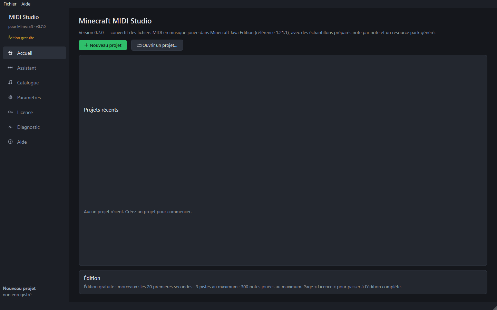
Les sons officiels de Minecraft
Les sons des instruments et des mobs, et les textures des icônes, appartiennent à Mojang : ils ne sont pas dans le programme. Au premier besoin (ouverture du catalogue ou d'un projet) :
- si Minecraft 1.21.1 est installé sur l'ordinateur, le logiciel utilise ses fichiers ;
- sinon, il les télécharge lui-même depuis les serveurs officiels de Mojang, comme un launcher : environ 41 Mo, une seule fois, chaque fichier étant vérifié avec l'empreinte publiée par Mojang.
La progression s'affiche en bas de la fenêtre. Sans internet, le logiciel le signale ; le bouton Télécharger maintenant de la page Paramètres relance le téléchargement plus tard.
Où sont mes fichiers ?
| Quoi | Où |
|---|---|
| Paramètres et activation de la licence | %APPDATA%\MinecraftMidiStudio |
| Sons officiels téléchargés | %LOCALAPPDATA%\MinecraftMidiStudio\minecraft |
| Journaux, cache des échantillons, sauvegardes de mondes | %LOCALAPPDATA%\MinecraftMidiStudio |
| Vos projets | là où vous les enregistrez (fichiers .mmsproj) |
Désinstaller
Supprimez MinecraftMidiStudio.exe. Pour effacer aussi vos paramètres, les sons téléchargés, le cache et les sauvegardes, supprimez les deux dossiers ci-dessus. Rien d'autre n'est installé sur l'ordinateur.
Guide suivant : premiers réglages.
Étape 2 — Premiers réglages
Objectif : choisir la langue et vérifier d'où viennent les sons (en général, rien à changer).
Ouvrez la page Paramètres dans le menu de gauche.
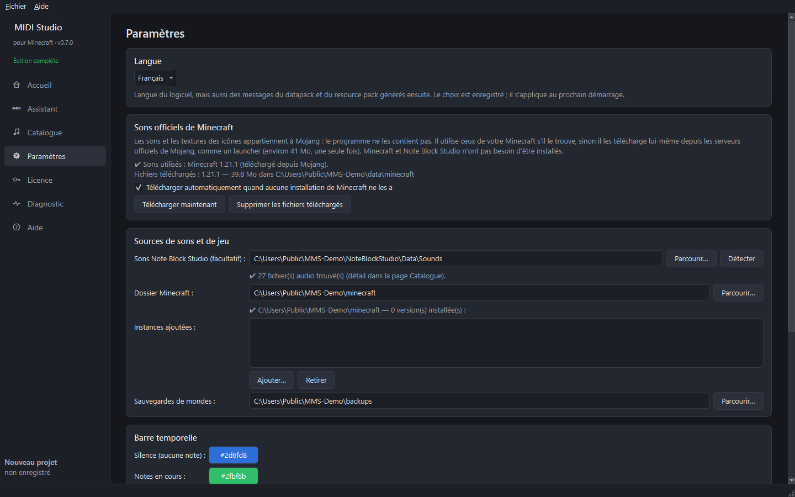
Langue
- Dans Langue, choisissez English ou Français.
- Cliquez sur Redémarrer maintenant (ou relancez simplement le programme plus tard).
La langue est enregistrée. Elle sert aussi pour les messages du datapack (chat du jeu) et la description du resource pack générés ensuite.
Sons officiels de Minecraft
Rien à faire en général : le logiciel utilise les sons de votre Minecraft, ou les télécharge lui-même depuis les serveurs officiels de Mojang (voir l'étape 1). Cette section indique la version utilisée et permet de :
- Télécharger maintenant — relancer le téléchargement (après une coupure d'internet, par exemple) ;
- Supprimer les fichiers téléchargés — libérer environ 41 Mo (ils seront téléchargés à nouveau au besoin) ;
- décocher le téléchargement automatique si vous préférez n'utiliser que votre installation de Minecraft.
Sources de sons et de jeu
- Sons Note Block Studio (facultatif) — seulement pour ajouter ses sons personnalisés à l'édition complète. En général détecté tout seul (
…\Minecraft Note Block Studio\Data\Sounds) ; sinon, Parcourir…. - Dossier Minecraft — laissez Automatique si vous utilisez le launcher officiel. Les instances Modrinth, CurseForge et Prism Launcher sont trouvées toutes seules.
- Instances ajoutées — seulement si votre dossier de jeu est à un endroit inhabituel : Ajouter… puis choisissez le dossier qui contient
saves. - Sauvegardes de mondes — l'endroit où sont rangées les sauvegardes ZIP faites avant l'installation.
Barre temporelle et audio
- Les couleurs de la barre temporelle (bleu = silence, vert = notes en cours) se changent ici.
- Sortie audio et Volume de préécoute ne concernent que l'écoute dans le logiciel, pas le jeu.
Guide suivant : choisir le monde.
Étape 3 — Choisir le monde (étape 1 de l'assistant)
Objectif : choisir le monde Minecraft où sera placée la structure musicale.
- Sur la page Accueil, cliquez sur Nouveau projet. L'Assistant s'ouvre sur l'étape 1, Monde.
- La liste montre tous les mondes trouvés (launcher officiel, Modrinth, CurseForge, Prism). Un monde créé pendant que le programme est ouvert apparaît tout seul ; Actualiser la liste relance la recherche.
- Cliquez sur un monde : sa version, son mode de jeu, les commandes et son dossier s'affichent en dessous.
- Cliquez sur Utiliser ce monde.

Bon à savoir
- Les commandes doivent être autorisées dans le monde (la musique se contrôle avec
/function). Sinon : en jeu, Ouvrir au LAN → Autoriser les commandes, ou utilisez un serveur. - Fermez le monde dans Minecraft avant d'installer la musique (étape 10). Le logiciel le vérifie.
- Créer une sauvegarde ZIP… copie tout le monde dans votre dossier de sauvegardes sans le modifier. Une sauvegarde est aussi proposée automatiquement avant toute installation.
- Rien n'est écrit dans le monde à cette étape.
Guide suivant : importer le fichier MIDI.
Étape 4 — Importer un fichier MIDI (étape 2 de l'assistant)
Objectif : charger le morceau à entendre dans Minecraft.
- Cliquez sur Suivant pour arriver à l'étape 2, MIDI.
- Glissez un fichier
.mid/.midisur la zone de dépôt, ou cliquez sur Choisir un fichier MIDI…. - L'analyse se fait en arrière-plan : tempo et changements de tempo, durée, pistes, canaux, instruments, notes, accords et percussions.
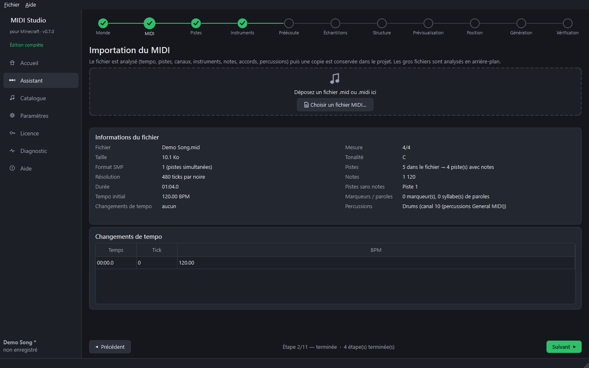
Ce qui est affiché
- Informations du fichier — taille, format, résolution, durée, tempo initial, mesure, tonalité, nombre de pistes et de notes.
- Changements de tempo — le tableau de droite liste chaque changement (ils sont respectés en jeu).
- Avertissements — par exemple des pistes sans nom, des notes sans fin ou une piste de percussions sur un canal mélodique.
Une copie du MIDI est gardée dans le projet : le projet fonctionne même si vous déplacez ou supprimez le fichier d'origine.
Édition gratuite : seules les 20 premières secondes du morceau sont écoutées et converties. L'édition complète convertit tout le morceau.
Guide suivant : choisir les pistes.
Étape 5 — Choisir les pistes (étape 3 de l'assistant)
Objectif : garder seulement les pistes voulues dans Minecraft, et les écouter.
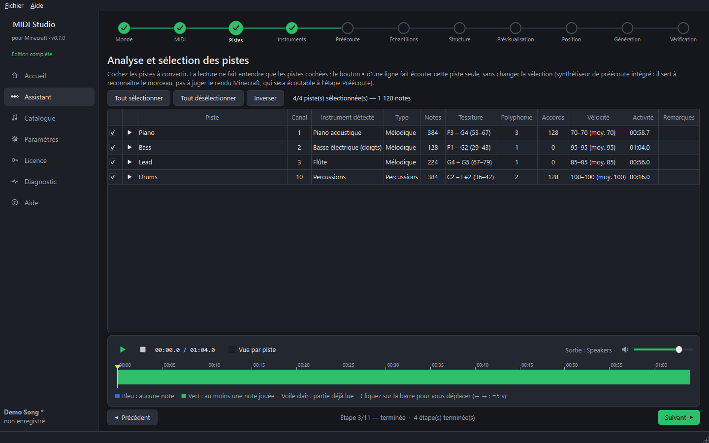
- Cochez les pistes à convertir. Boutons : Tout sélectionner, Tout désélectionner, Inverser.
- Cliquez sur Lecture (ou appuyez sur Espace) pour entendre les pistes cochées.
- Cliquez sur le bouton ▶ au début d'une ligne pour entendre cette piste seule, sans toucher aux cases. Cliquez sur ■ pour arrêter. La barre colorée montre alors uniquement les notes de cette piste.
La barre temporelle
- Bleu : aucune note ne sonne. Vert : au moins une note sonne.
- Le voile clair montre la partie déjà lue.
- Cliquez sur la barre pour vous déplacer ; ← / → avancent ou reculent de 5 secondes.
- Vue par piste affiche une ligne par piste cochée.
Le son s'arrête tout seul quand vous passez à une autre étape.
Le son vient ici d'un petit synthétiseur intégré : il sert seulement à reconnaître le morceau. Le vrai rendu Minecraft s'écoute à l'étape 5, Préécoute.
Édition gratuite : 3 pistes cochées et 300 notes jouées au maximum.
Guide suivant : les instruments.
Étape 6 — Instruments et batterie (étape 4 de l'assistant)
Objectif : donner un son Minecraft à chaque piste.
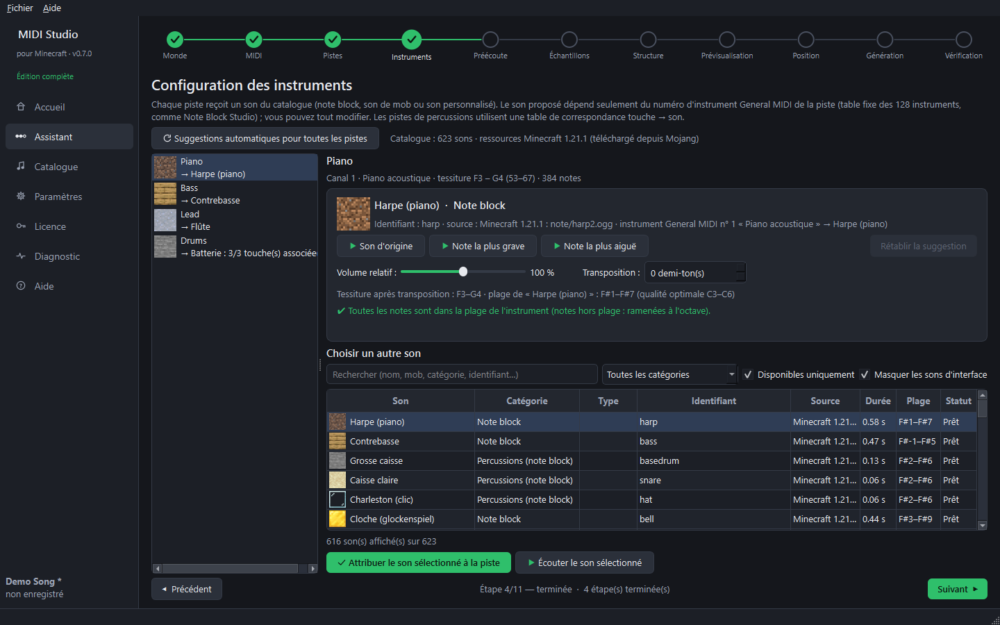
- Chaque piste reçoit automatiquement un son d'après son numéro d'instrument General MIDI, avec une table fixe des 128 instruments, comme l'import MIDI de Note Block Studio (voir la table en bas de ce guide) : par exemple n° 1 piano → harpe, n° 33 à 40 (basses) → contrebasse, n° 41 violon → flûte. Le nom de la piste et ses notes ne comptent pas. La raison est écrite sous le son.
- Pour la changer : choisissez un autre son dans le catalogue à droite (recherche, catégories, Écouter), puis cliquez sur Attribuer le son sélectionné à la piste.
- Réglez le Volume relatif et la Transposition (en demi-tons) de la piste.
- Note la plus grave / la plus aiguë font entendre les extrêmes de la piste avec le son choisi.
Pistes de batterie
Une piste de percussions utilise une table touche → son : chaque touche (grosse caisse, caisse claire, charleston…) est associée à un son et à une transposition, comme le font les créateurs Note Block Studio. Les touches sans son peuvent être ignorées ou jouées avec la caisse claire. Rétablir la table par défaut annule vos changements.
Sons disponibles
- Note blocks (fichiers officiels de Minecraft : ceux de votre installation, ou téléchargés depuis Mojang).
- Sons de mobs de la version de Minecraft choisie, classés par catégorie (voix, douleur, déplacement…).
- Sons personnalisés placés dans le dossier
Customde Note Block Studio (édition complète, si Note Block Studio est installé).
Édition gratuite : 8 instruments de note block de base (sans pling, cloche, carillon, flûte, guitare, xylophones ni bit), et seulement les voix de 3 animaux de la ferme pour les sons de mobs.
Table des 128 instruments General MIDI
Dans l'édition gratuite, un son réservé à l'édition complète est remplacé par le son gratuit le plus proche (souvent la harpe).
| N° | General MIDI | Note block |
|---|---|---|
| 1 | Piano acoustique | Harpe (piano) |
| 2 | Piano brillant | Harpe (piano) |
| 3 | Piano électrique à queue | Pling (piano électrique) |
| 4 | Piano bastringue | Harpe (piano) |
| 5 | Piano électrique 1 | Pling (piano électrique) |
| 6 | Piano électrique 2 | Pling (piano électrique) |
| 7 | Clavecin | Harpe (piano) |
| 8 | Clavinet | Pling (piano électrique) |
| 9 | Célesta | Cloche (glockenspiel) |
| 10 | Glockenspiel | Cloche (glockenspiel) |
| 11 | Boîte à musique | Cloche (glockenspiel) |
| 12 | Vibraphone | Vibraphone (xylophone en fer) |
| 13 | Marimba | Xylophone |
| 14 | Xylophone | Xylophone |
| 15 | Cloches tubulaires | Carillon |
| 16 | Tympanon | Harpe (piano) |
| 17 | Orgue Hammond | Bit (onde carrée) |
| 18 | Orgue percussif | Bit (onde carrée) |
| 19 | Orgue rock | Bit (onde carrée) |
| 20 | Orgue d'église | Flûte |
| 21 | Harmonium | Flûte |
| 22 | Accordéon | Flûte |
| 23 | Harmonica | Flûte |
| 24 | Bandonéon | Flûte |
| 25 | Guitare nylon | Guitare |
| 26 | Guitare acier | Guitare |
| 27 | Guitare jazz | Guitare |
| 28 | Guitare électrique claire | Guitare |
| 29 | Guitare étouffée | Guitare |
| 30 | Guitare saturée | Guitare |
| 31 | Guitare distorsion | Guitare |
| 32 | Harmoniques de guitare | Guitare |
| 33 | Contrebasse | Contrebasse |
| 34 | Basse électrique (doigts) | Contrebasse |
| 35 | Basse électrique (médiator) | Contrebasse |
| 36 | Basse fretless | Contrebasse |
| 37 | Basse slap 1 | Contrebasse |
| 38 | Basse slap 2 | Contrebasse |
| 39 | Synthé basse 1 | Contrebasse |
| 40 | Synthé basse 2 | Contrebasse |
| 41 | Violon | Flûte |
| 42 | Alto | Flûte |
| 43 | Violoncelle | Contrebasse |
| 44 | Contrebasse à archet | Contrebasse |
| 45 | Cordes trémolo | Flûte |
| 46 | Cordes pizzicato | Harpe (piano) |
| 47 | Harpe | Harpe (piano) |
| 48 | Timbales | Grosse caisse |
| 49 | Ensemble de cordes 1 | Harpe (piano) |
| 50 | Ensemble de cordes 2 | Harpe (piano) |
| 51 | Cordes synthé 1 | Pling (piano électrique) |
| 52 | Cordes synthé 2 | Pling (piano électrique) |
| 53 | Chœur « Aah » | Flûte |
| 54 | Voix « Ooh » | Flûte |
| 55 | Voix synthé | Pling (piano électrique) |
| 56 | Coup d'orchestre | Bit (onde carrée) |
| 57 | Trompette | Bit (onde carrée) |
| 58 | Trombone | Didgeridoo |
| 59 | Tuba | Didgeridoo |
| 60 | Trompette bouchée | Bit (onde carrée) |
| 61 | Cor d'harmonie | Flûte |
| 62 | Section de cuivres | Bit (onde carrée) |
| 63 | Cuivres synthé 1 | Bit (onde carrée) |
| 64 | Cuivres synthé 2 | Bit (onde carrée) |
| 65 | Saxophone soprano | Flûte |
| 66 | Saxophone alto | Flûte |
| 67 | Saxophone ténor | Flûte |
| 68 | Saxophone baryton | Didgeridoo |
| 69 | Hautbois | Flûte |
| 70 | Cor anglais | Flûte |
| 71 | Basson | Didgeridoo |
| 72 | Clarinette | Flûte |
| 73 | Piccolo | Flûte |
| 74 | Flûte | Flûte |
| 75 | Flûte à bec | Flûte |
| 76 | Flûte de Pan | Flûte |
| 77 | Bouteille soufflée | Flûte |
| 78 | Shakuhachi | Flûte |
| 79 | Sifflement | Flûte |
| 80 | Ocarina | Flûte |
| 81 | Lead carré | Bit (onde carrée) |
| 82 | Lead dent de scie | Bit (onde carrée) |
| 83 | Lead calliope | Flûte |
| 84 | Lead chiff | Flûte |
| 85 | Lead charang | Guitare |
| 86 | Lead voix | Pling (piano électrique) |
| 87 | Lead quintes | Bit (onde carrée) |
| 88 | Lead basse + lead | Bit (onde carrée) |
| 89 | Pad new age | Pling (piano électrique) |
| 90 | Pad chaud | Pling (piano électrique) |
| 91 | Pad polysynthé | Pling (piano électrique) |
| 92 | Pad chœur | Flûte |
| 93 | Pad archet | Pling (piano électrique) |
| 94 | Pad métallique | Vibraphone (xylophone en fer) |
| 95 | Pad halo | Pling (piano électrique) |
| 96 | Pad balayage | Pling (piano électrique) |
| 97 | FX pluie | Carillon |
| 98 | FX bande-son | Pling (piano électrique) |
| 99 | FX cristal | Carillon |
| 100 | FX atmosphère | Pling (piano électrique) |
| 101 | FX brillance | Cloche (glockenspiel) |
| 102 | FX gobelins | Pling (piano électrique) |
| 103 | FX échos | Carillon |
| 104 | FX science-fiction | Bit (onde carrée) |
| 105 | Sitar | Banjo |
| 106 | Banjo | Banjo |
| 107 | Shamisen | Banjo |
| 108 | Koto | Harpe (piano) |
| 109 | Kalimba | Vibraphone (xylophone en fer) |
| 110 | Cornemuse | Didgeridoo |
| 111 | Violon folk | Flûte |
| 112 | Shehnai | Flûte |
| 113 | Clochette | Cloche (glockenspiel) |
| 114 | Agogô | Cloche de vache |
| 115 | Steel drum | Vibraphone (xylophone en fer) |
| 116 | Woodblock | Charleston (clic) |
| 117 | Taiko | Grosse caisse |
| 118 | Tom mélodique | Grosse caisse |
| 119 | Batterie synthé | Grosse caisse |
| 120 | Cymbale inversée | Caisse claire |
| 121 | Bruit de frette | Charleston (clic) |
| 122 | Respiration | Caisse claire |
| 123 | Vagues | Caisse claire |
| 124 | Chant d'oiseau | Flûte |
| 125 | Sonnerie de téléphone | Cloche (glockenspiel) |
| 126 | Hélicoptère | Caisse claire |
| 127 | Applaudissements | Caisse claire |
| 128 | Coup de feu | Caisse claire |
Guide suivant : préécoute et échantillons.
Étape 7 — Préécoute et échantillons (étapes 5 et 6 de l'assistant)
Objectif : entendre le vrai rendu Minecraft, puis préparer tous les fichiers audio.
Préécoute (étape 5)
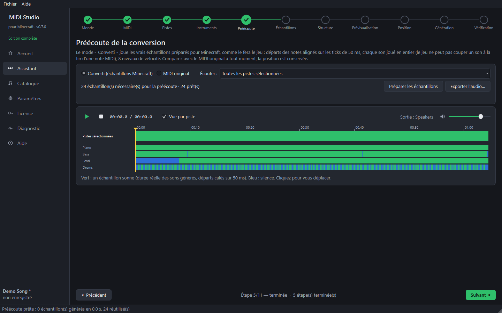
- Les échantillons nécessaires à la préécoute sont préparés tout seuls (la première fois prend quelques secondes).
- Converti (échantillons Minecraft) joue le morceau comme le jeu le fera : notes calées sur les ticks de 50 ms, chaque son joué en entier, 8 niveaux de vélocité.
- MIDI original revient à l'original à la même position, pour comparer.
- Écouter permet de n'entendre qu'une piste.
Exporter l'audio (édition complète)
Exporter l'audio… enregistre le morceau dans un fichier, par exemple pour la bande-son d'une vidéo :
- Son : Minecraft (les vrais échantillons, comme dans le jeu) ou MIDI original ;
- Pistes : toutes les pistes sélectionnées mélangées, ou une seule ;
- Format : MP3, WAV, FLAC ou OGG.
Le fichier dure au moins autant que le morceau, ce qui facilite le calage sur une vidéo.
Échantillons (étape 6)
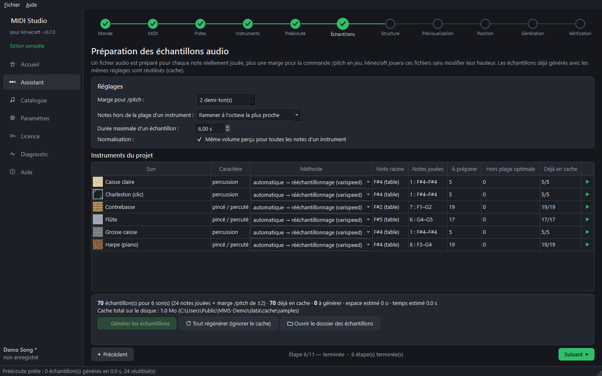
Un fichier audio est préparé pour chaque note réellement jouée : Minecraft n'a jamais à changer la hauteur d'un son (c'est ce qui rend le résultat propre).
- Marge pour /pitch — des notes en plus pour que la commande
/function music:<nom>/pitchtrouve toujours un échantillon. - Notes hors de la plage d'un instrument — ramenées à l'octave, ignorées, ou générées quand même.
- Durée maximale d'un échantillon — les sons longs sont raccourcis avec un fondu.
- Normalisation — même volume perçu pour toutes les notes d'un instrument.
- Méthode par instrument — rééchantillonnage (son de note block classique) ou hauteur seule (garde la durée, mieux pour les voix).
Cliquez sur Générer les échantillons. Les échantillons déjà faits avec les mêmes réglages sont repris du cache.
Guide suivant : la structure.
Étape 8 — La structure (étape 7 de l'assistant)
Objectif : choisir à quoi ressemble la musique dans le monde.
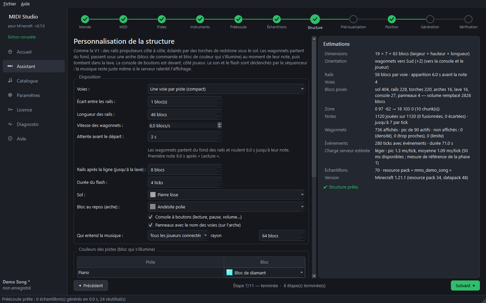
Ce qui est construit
- Des rails propulseurs côte à côte, éclairés par des torches de redstone sous le sol.
- Les wagonnets apparaissent toujours au fond des rails et roulent vers vous. Dans la lave, ils disparaissent : de nouveaux wagonnets apparaissent au fond pour les notes suivantes.
- Au-dessus de la ligne de déclenchement : une arche de blocs de commande et un bloc de couleur qui s'illumine quand la note joue (une couleur par piste).
- Après la ligne, les wagonnets tombent dans une fosse de lave.
- Devant, de votre côté : une console de boutons (lecture, pause, arrêt, volume −/+, tempo −/+, hauteur −/+) avec des panneaux.
Le son et les flashs sont déclenchés par le séquenceur du datapack : les wagonnets sont seulement visuels, la musique reste juste même si le serveur ralentit.
Disposition
- Voies — une par piste (compact), une par note jouée (rouleau de piano) ou une par hauteur.
- Écart entre les rails — 1 = rails collés.
- Longueur des rails et Vitesse des wagonnets — elles décident combien de temps avant sa note un wagonnet apparaît.
- Attente avant le départ — après « Lecture », le temps de vous placer (par exemple pour filmer) avant que les wagonnets partent. La première note arrive après cette attente plus le trajet des wagonnets (affiché juste en dessous). Modifiable aussi en jeu :
/function music:delay {s:5}. - Rails après la ligne — distance jusqu'à la lave.
- Sol, Bloc au repos de l'arche, Durée du flash, Couleurs des pistes.
- Console à boutons, Panneaux avec le nom des voies, Qui entend la musique (tout le monde, ou les joueurs proches).
Optimisation
Choisissez un profil : Qualité maximale, Équilibré ou Performances. Personnalisé (édition complète) débloque chaque réglage : wagonnets actifs au maximum, densité, notes simultanées par tick… L'écart minimal entre wagonnets (0,5 bloc par défaut) se règle dans toutes les éditions : à 0, chaque note a son wagonnet, même sur les passages très rapides. Si des notes n'ont pas de wagonnet, l'étape l'écrit et dit pourquoi. Le panneau Estimations montre en direct la taille, le nombre de blocs, les wagonnets et la charge estimée du serveur.
Guide suivant : vue 3D et position.
Étape 9 — Vue 3D et position (étapes 8 et 9 de l'assistant)
Vue 3D (étape 8)
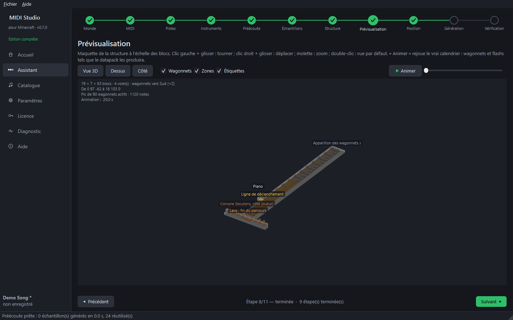
- Clic gauche + glisser : tourner. Clic droit + glisser : déplacer. Molette : zoom. Double-clic : vue par défaut.
- Vue 3D / Dessus / Côté : vues prédéfinies. Les calques se masquent (wagonnets, zones, étiquettes).
- Animer rejoue le vrai calendrier : wagonnets et flashs exactement comme le datapack les produira.
Position (étape 9)
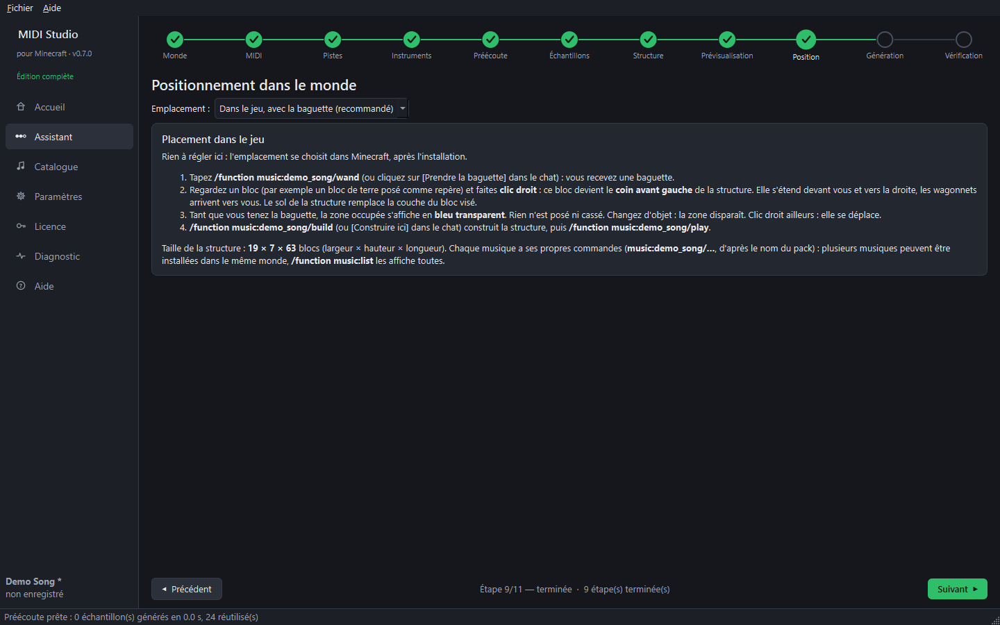
Par défaut, rien à régler ici : l'emplacement se choisit dans le jeu, avec la baguette de placement, après l'installation (voir le guide « Dans Minecraft »). Clic droit sur un bloc : il devient le coin avant gauche de la structure, la zone s'affiche en bleu transparent, rien n'est posé avant /function music:<nom>/build. L'étape rappelle la commande de votre musique et la taille de la structure.
Coordonnées fixes (facultatif)
Choisissez Coordonnées fixes, choisies ici dans la liste Emplacement pour donner la position depuis le logiciel (par exemple pour un serveur) :
- X / Y / Z est le coin avant de la structure, côté console, là où vous vous tenez. La structure s'étend derrière.
- Les wagonnets roulent vers — le sens de déplacement des wagonnets (vers vous).
- Devant le joueur (dernière sauvegarde) place la console 2 blocs devant votre dernière position enregistrée, centrée sur vous.
- Poser sur le terrain met Y juste au-dessus du point le plus haut du terrain sous la structure.
- La carte Vue du monde (lecture seule) montre l'emprise en bleu et votre dernière position en jaune. Le nombre de blocs existants qui seraient remplacés est affiché.
- Cliquez sur Valider cette position.
La position est alors enregistrée dans le datapack : /function music:<nom>/build construit directement. La baguette peut quand même la déplacer.
Astuce : fermez Minecraft avant d'ouvrir cette étape pour voir une carte à jour.
Guide suivant : générer et installer.
Étape 10 — Générer, installer et vérifier (étapes 10 et 11 de l'assistant)
Génération (étape 10)

- La liste Vérifications doit être verte : monde fermé dans Minecraft, structure et échantillons prêts, emplacement (dans le jeu avec la baguette, ou position validée).
Le nom du pack donne le nom de la musique dans le jeu : « Miss You » →
/function music:miss_you/…. - Packs et options — nom du pack, description, version, icône.
- Cliquez sur Générer et installer dans le monde….
- Une fenêtre de confirmation dit exactement ce qui va se passer : fichiers écrits, taille de la structure, autres musiques du monde, sauvegarde du monde. Confirmez.
- Le logiciel fait une sauvegarde ZIP du monde, puis installe :
- le datapack de la musique dans
datapacks/music_<nom>.zip; - ses sons dans
mmstudio_packs/<nom>.zip; - le pack de ressources du monde (
resources.zipen 1.21,resourcepacks/resources.zipen 26.x), qui réunit les sons de toutes les musiques installées dans ce monde : Minecraft le charge tout seul à l'ouverture du monde, et seulement dans ce monde.
- le datapack de la musique dans
Pour mettre plusieurs musiques dans le même monde (édition complète ; l'édition gratuite en garde une seule), générez et installez chaque projet l'un après l'autre : les musiques déjà installées sont conservées (la ligne Musiques installées dans ce monde les liste). Retirer une musique du monde… enlève son datapack et ses sons (ils sont déplacés dans les sauvegardes) ; supprimez d'abord sa structure dans le jeu avec /function music:<nom>/remove.
Aucun fichier n'est supprimé : un fichier remplacé est déplacé dans le dossier des sauvegardes.
Générer les fichiers seulement n'écrit rien dans le monde (pour un serveur ou une installation manuelle).
Vérification (étape 11)
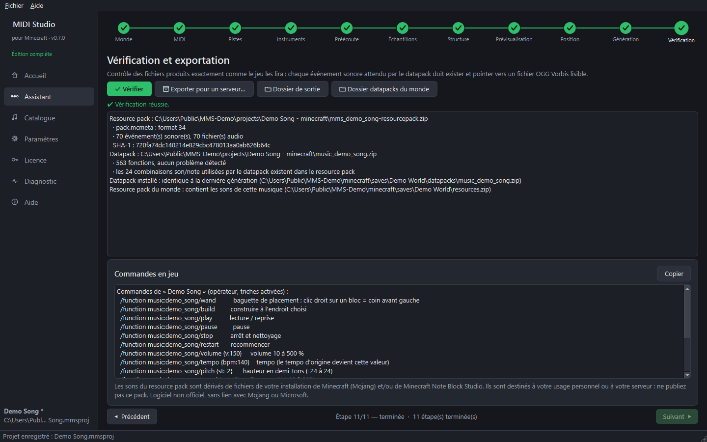
Cliquez sur Vérifier : les fichiers sont relus exactement comme le jeu les lira (chaque événement sonore existe et est un OGG Vorbis valide, chaque son utilisé par le datapack est dans le resource pack, le datapack installé est identique et le pack du monde contient bien les sons de la musique). Les commandes de la musique sont listées en dessous.
Guide suivant : dans Minecraft.
Étape 11 — Dans Minecraft
Objectif : choisir l'emplacement, construire la structure et lancer la musique.
Chaque musique a ses propres commandes, d'après le nom du pack : « Miss You » devient music:miss_you, « DDLC » devient music:ddlc. Dans ce guide, remplacez <nom> par celui de votre musique (il est affiché à l'étape 10 du logiciel et dans le chat à l'ouverture du monde).
- Lancez Minecraft et ouvrez le monde. Son pack de ressources est chargé tout seul — rien à activer dans le menu des packs.
- Dans le chat, cliquez sur [Prendre la baguette], ou tapez (il faut être opérateur / avoir les triches activées) :
/function music:<nom>/wand
- Posez un bloc comme repère (de la terre, par exemple), regardez-le et faites clic droit avec la baguette. Ce bloc devient le coin avant gauche de la structure : elle s'étend devant vous et vers la droite, et les wagonnets arriveront vers vous. Le sol de la structure remplace la couche du bloc visé.
- Tant que vous tenez la baguette, la zone occupée s'affiche en bleu transparent, avec un repère « avant de la structure » côté console. Rien n'est posé ni cassé.
- Changez d'objet en main : la zone disparaît (elle revient quand vous reprenez la baguette).
- Clic droit sur un autre bloc : la zone se déplace, l'ancienne disparaît.
- Cliquez sur [Construire ici] dans le chat, ou tapez :
/function music:<nom>/buildLes chunks sont chargés, puis la structure est construite. - Cliquez sur [Lancer la musique], appuyez sur le bouton Lecture de la console, ou tapez :
/function music:<nom>/play
- La première note arrive après l'attente avant le départ (3 secondes par défaut) plus le trajet des wagonnets depuis le fond des rails : le temps de vous placer, par exemple pour filmer. Le chat indique dans combien de secondes.
Si vous avez choisi des coordonnées fixes à l'étape 9 du logiciel, l'emplacement est déjà enregistré : passez directement à l'étape 5. La baguette sert seulement à le changer.
Pour déplacer une structure déjà construite : /function music:<nom>/remove (elle est remplacée par de l'air), puis un nouveau clic droit avec la baguette.
Plusieurs musiques dans le même monde (édition complète)
Avec l'édition complète, installez autant de musiques que vous voulez dans le même monde (étape 10 du logiciel, une par une) : chacune a son datapack, ses commandes et sa structure, et le pack de ressources du monde contient les sons de toutes.
/function music:list: la liste cliquable des musiques du monde (lecture, arrêt, baguette, aide)./function music:stop_all: arrête toutes les musiques.- Plusieurs musiques peuvent jouer en même temps.
L'édition gratuite garde une seule musique par monde : en installer une autre retire la précédente (elle est conservée dans les sauvegardes).
Toutes les commandes
| Commande | Effet |
|---|---|
/function music:<nom>/wand | baguette de placement (clic droit sur un bloc = coin avant gauche) |
/function music:<nom>/build | construire à l'endroit choisi |
/function music:<nom>/play | lecture / reprise |
/function music:<nom>/pause | pause |
/function music:<nom>/stop | arrêt et nettoyage |
/function music:<nom>/restart | recommencer |
/function music:<nom>/volume {v:150} | volume de 10 à 500 % |
/function music:<nom>/tempo {bpm:140} | tempo |
/function music:<nom>/pitch {st:-2} | hauteur en demi-tons (−24 à 24) |
/function music:<nom>/speed {pct:-5} | vitesse en % (−90 à 300) |
/function music:<nom>/seek {s:30} | aller à 30 secondes |
/function music:<nom>/delay {s:5} | attente avant le départ des wagonnets (0 à 120 s) |
/function music:<nom>/lanes | écouter chaque voie (liste cliquable) |
/function music:<nom>/status / help | réglages et emplacement actuels / aide cliquable |
/function music:<nom>/remove | retirer la structure (demande confirmation) |
/function music:<nom>/uninstall | retirer les scores du datapack |
/function music:list / stop_all | toutes les musiques du monde / tout arrêter |
Les joueurs non opérateurs utilisent /trigger music.<nom>.play, /trigger music.<nom>.pause, /trigger music.<nom>.stop, /trigger music.<nom>.volume set 150 (idem pour tempo, pitch, speed, delay).
La console de boutons devant la structure fait la même chose : lecture, pause, arrêt, volume, tempo, hauteur.
Une commande littérale/play musicest impossible dans Minecraft vanilla sans mod : la musique se contrôle avec des fonctions de datapack. Minecraft n'accepte pas non plus de majuscules ni d'espaces dans leur nom : d'oùmusic:miss_you/play.
Guide suivant : éditions gratuite et complète.
Étape 12 — Éditions gratuite et complète, licence
Édition gratuite
Sans licence, le logiciel est l'édition gratuite. Tout fonctionne, avec ces limites :
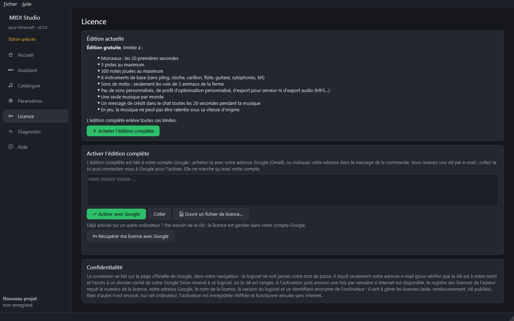
- Morceaux : les 20 premières secondes.
- 3 pistes et 300 notes jouées au maximum.
- 8 instruments de base (sans pling, cloche, carillon, flûte, guitare, xylophones ni bit).
- Sons de mobs : seulement les voix de 3 animaux de la ferme.
- Pas de sons personnalisés, de profil d'optimisation personnalisé, d'export pour serveur ni d'export audio (MP3…).
- Une seule musique par monde (installer une autre musique remplace la première).
- Un message de crédit dans le chat toutes les 20 secondes pendant la musique (« Musique jouée avec Minecraft MIDI Studio, créé par Akatsudo »).
- En jeu, la musique ne peut pas être ralentie sous sa vitesse d'origine.
Acheter l'édition complète
L'édition complète est liée à votre compte Google. Une clé ne marche qu'avec le compte pour lequel elle a été achetée : même copiée, elle ne sert à rien à quelqu'un d'autre.
- Cliquez sur Acheter l'édition complète (page Licence) : vous arrivez sur la boutique.
- Payez avec votre adresse Google (Gmail), ou écrivez-la dans le message de la commande si vous payez avec une autre adresse.
- Vous recevez une clé de licence par e-mail. Elle commence par
MMS-.
Activer la clé
- Ouvrez la page Licence et collez la clé entière.
- Cliquez sur Activer avec Google. Le logiciel vérifie la clé, puis votre navigateur ouvre la page officielle de connexion Google.
- Connectez-vous avec le compte Google indiqué, puis acceptez. La page affiche « Connexion réussie » : revenez dans le logiciel.
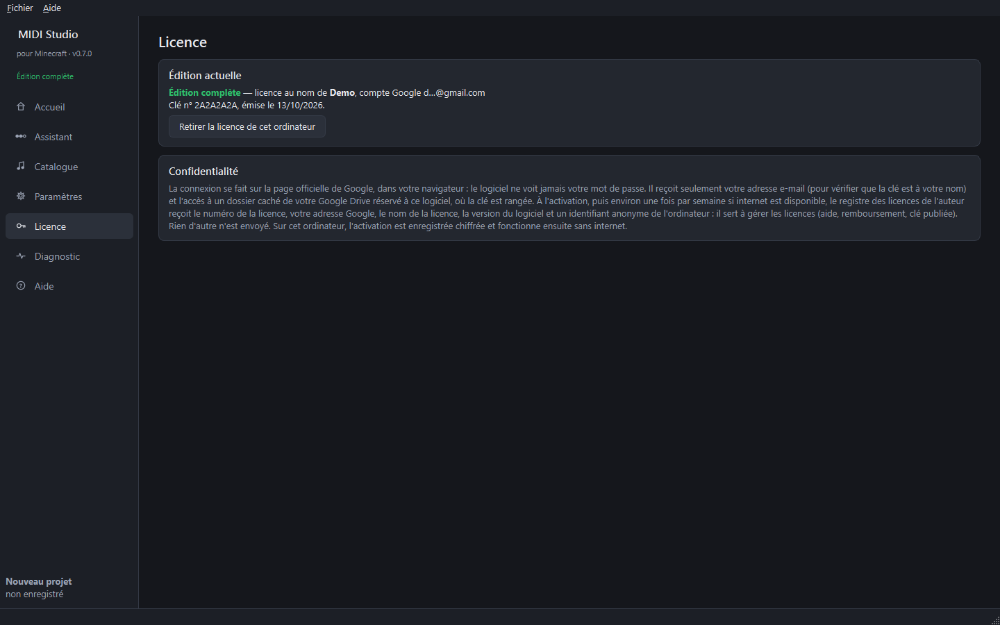
L'édition complète est débloquée immédiatement, sans redémarrer. Ensuite, le logiciel fonctionne sans internet sur cet ordinateur.
Changer d'ordinateur
La clé est gardée dans un dossier caché de votre Google Drive, réservé au logiciel (il n'apparaît pas dans vos fichiers). Sur un autre ordinateur, page Licence, cliquez sur Récupérer ma licence avec Google et connectez-vous : c'est tout, pas besoin de la clé.
Retirer la licence de cet ordinateur enlève l'activation de cet ordinateur seulement ; la licence reste dans votre compte Google.
Confidentialité
- La connexion se fait sur la page de Google, dans votre navigateur : le logiciel ne voit jamais votre mot de passe.
- Il reçoit seulement votre adresse e-mail (pour vérifier que la clé est à votre nom) et l'accès au dossier caché du logiciel dans votre Google Drive, où la clé est rangée. Il ne peut pas voir vos autres fichiers.
- Rien n'est envoyé à l'auteur ni ailleurs. Sur l'ordinateur, l'activation est enregistrée chiffrée.
Détails : page Confidentialité du site.
Guide suivant : jouer sur un serveur.
Étape 13 — Jouer sur un serveur
Objectif : utiliser la musique sur un serveur multijoueur (édition complète).
- À l'étape 11, cliquez sur Exporter pour un serveur… et choisissez un dossier. Vous obtenez :
music_<nom>.zip(le datapack de la musique) ;- le resource pack (
.zip) ; LISEZ-MOI-SERVEUR.txt: les instructions, avec le SHA-1 du pack.
- Datapack : copiez
music_<nom>.zipdans<monde du serveur>/datapacks/, puis tapez/reload(ou redémarrez le serveur). - Resource pack : mettez le resource pack à une adresse de téléchargement directe (HTTP ou HTTPS), puis dans
server.properties:resource-pack=<adresse du fichier> resource-pack-sha1=<SHA-1 donné dans les instructions> require-resource-pack=true (facultatif)
- Pour la console de boutons :
enable-command-block=truedansserver.properties. - En jeu, en opérateur :
/function music:<nom>/wandpour la baguette de placement (clic droit sur un bloc = coin avant gauche de la structure, zone en bleu), puis/function music:<nom>/buildet/function music:<nom>/play. Avec des coordonnées fixes choisies dans le logiciel, la baguette est inutile.
Les joueurs non opérateurs contrôlent la musique avec /trigger music.<nom>.play, /trigger music.<nom>.volume set 150, etc.
Plusieurs musiques sur le serveur : copiez chaque datapack dans datapacks/. Le serveur n'accepte qu'un resource pack : installez les musiques dans un monde avec le logiciel (étape 10), puis hébergez le resources.zip de ce monde, qui contient les sons de toutes (son SHA-1 se calcule par exemple avec certutil -hashfile resources.zip SHA1).
Les sons du pack sont ceux de Minecraft (ils appartiennent à Mojang) : utilisez-les pour votre serveur, mais ne publiez pas le pack.
Guide suivant : en cas de problème.
Étape 14 — En cas de problème
Pas de son en jeu
- Avez-vous ouvert le monde après l'installation ? Le pack de ressources du monde est chargé à l'ouverture du monde.
- Surveillez un message d'erreur de pack à l'ouverture du monde. Relancez Vérifier (étape 11) : il doit afficher Vérification réussie.
- Vérifiez le volume Juke-box/Blocs musicaux du jeu (Options → Musique et sons).
- Essayez
/function music:<nom>/volume {v:150}. - Dans le journal de Minecraft (
.minecraft\logs\latest.log), une ligne « Unable to play unknown soundEvent » veut dire que le resource pack n'est pas chargé : générez et installez à nouveau.
La structure ne se construit pas
- Les commandes doivent être autorisées (opérateur / triches).
- Choisissez d'abord l'emplacement :
/function music:<nom>/wand, puis clic droit sur un bloc avec la baguette. - Si la zone n'a pas pu être chargée en 30 s, rien n'est modifié : réessayez.
La baguette ne fait rien
- Tenez-la dans la main principale et visez un bloc à moins de 64 blocs (le ciel ou l'eau seule ne comptent pas).
- Un clic droit sur un bloc qui s'ouvre (coffre, porte, levier…) l'utilise au lieu de la baguette : visez un bloc ordinaire.
- Chaque musique a sa propre baguette : prenez celle de la bonne musique (
/function music:<nom>/wand). - Une structure déjà construite ne se déplace pas :
/function music:<nom>/removed'abord.
« Sons officiels de Minecraft non téléchargés »
Le premier téléchargement (environ 41 Mo depuis les serveurs de Mojang) n'a pas pu se faire, en général faute d'internet. Vérifiez la connexion, puis Paramètres → Sons officiels de Minecraft → Télécharger maintenant. Un antivirus ou un pare-feu d'entreprise peut aussi bloquer piston-meta.mojang.com et resources.download.minecraft.net.
La licence ne s'active pas
- « Cette clé a été achetée pour le compte Google … » : connectez-vous avec le compte Google indiqué (son début et son domaine sont affichés). Si vous avez payé avec une autre adresse, demandez à l'auteur une clé pour votre adresse Google.
- « Aucune licence n'est enregistrée dans le compte Google » : utilisez Activer avec Google avec la clé reçue par e-mail (la première fois), puis Récupérer ma licence marchera sur vos autres ordinateurs.
- La page de Google ne revient pas vers le logiciel : gardez le logiciel ouvert pendant la connexion, et laissez votre pare-feu accepter la connexion locale (adresse
127.0.0.1). - « Cette activation vient d'un autre ordinateur » : normal après une copie de vos paramètres ; cliquez sur Récupérer ma licence avec Google.
Un monde n'apparaît pas dans la liste
- Il apparaît tout seul après un instant ; Actualiser la liste relance la recherche.
- Pour un dossier de jeu inhabituel : Ajouter un dossier d'instance… (étape 1) ou Paramètres → Instances ajoutées.
Le logiciel affiche une erreur
Ouvrez Diagnostic : la page montre l'environnement détecté, lance un autotest et affiche le journal. Copier le rapport ou Exporter le rapport… pour le partager quand vous demandez de l'aide. Rien n'est jamais envoyé automatiquement.
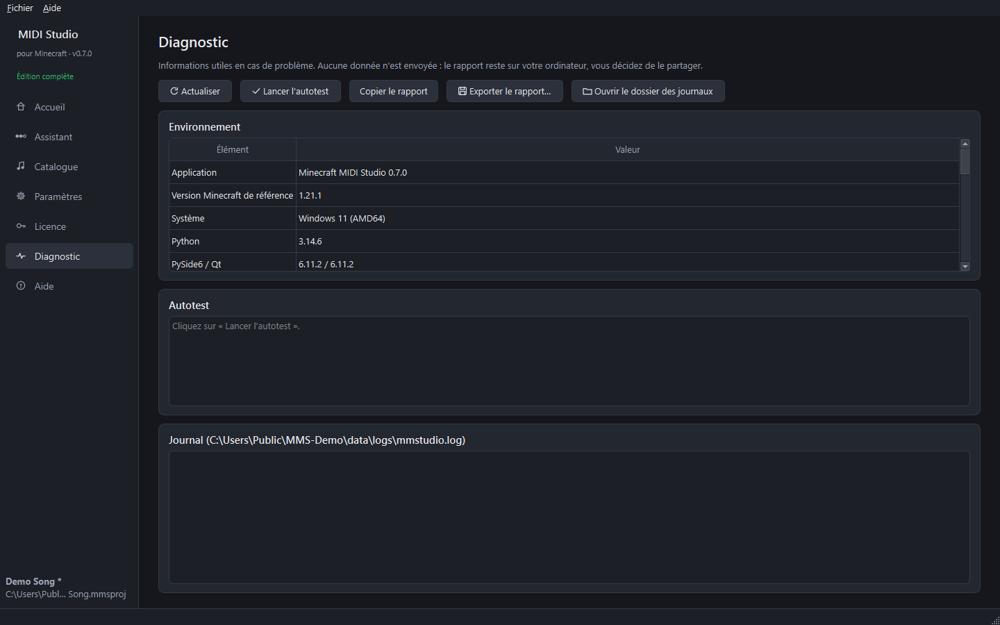
Tout retirer d'un monde
- En jeu, pour chaque musique :
/function music:<nom>/remove(retire la structure), puis/function music:<nom>/uninstall. - Puis, dans le logiciel (étape 10) : Retirer une musique du monde…. Ou à la main : supprimez
datapacks/music_<nom>.zip, le dossiermmstudio_packset leresources.zipdu monde (ouresourcepacks/resources.zip). - Ou restaurez la sauvegarde ZIP faite avant l'installation.